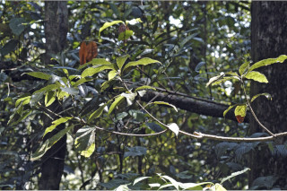
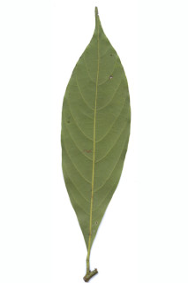
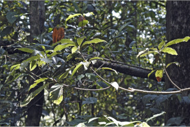
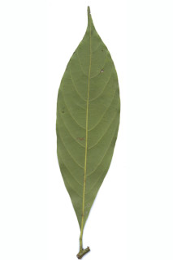

| Leaves : | Leaves simple , alternate , spiral , clustered at twig ends; petiole 0.5-1.2 cm, slightly canaliculate above, glabrous ; lamina 8-18 x 1.7-3.8 cm, usually narrow elliptic , sometimes narrow oblanceolate , apex narrowly and gradually long acuminate , base acute to cuneate , margin entire , chartaceous , glabrous , slightly glaucous and sparsely puberulous beneath; midrib slightly canaliculate above; secondary_nerves 8-14 pairs, gradually curved and ascending; tertiary_nerves reticulo-percurrent . |


 


